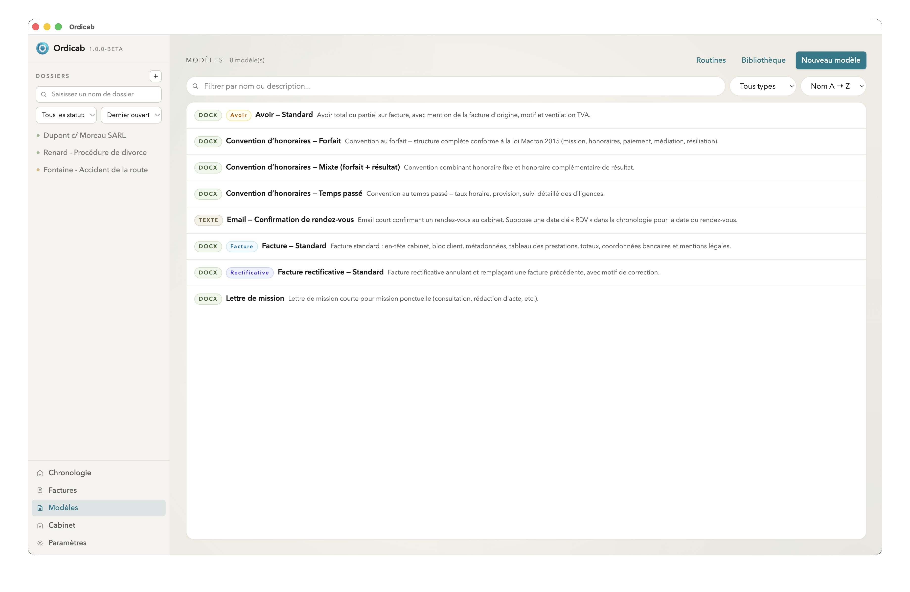
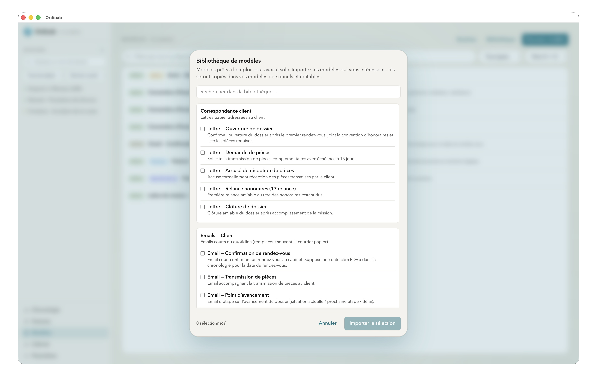

Modèles de documents
Préparez vos courriers types, conventions et actes une seule fois. Ensuite, générez des documents pré-remplis en un clic à partir des données du dossier. Plus besoin de recopier les informations à chaque fois.
La bibliothèque de modèles
La section Modèles présente tous les modèles disponibles dans votre cabinet, organisés par catégorie.

Liste des modèles — organisés par catégorie

Bibliothèque — modèles disponibles dans votre cabinet
Créer un modèle
Un modèle est un document Word (.docx) dans lequel vous insérez des variables entre doubles accolades. Lors de la génération, Ordicab remplace ces variables par les données réelles du dossier.
Variables disponibles
Les principales variables que vous pouvez utiliser dans vos modèles :
| Catégorie | Variable | Description |
|---|---|---|
| Cabinet | {{cabinet.nom}} |
Nom du cabinet |
{{cabinet.adresse}} |
Adresse complète du cabinet | |
{{cabinet.telephone}} |
Téléphone du cabinet | |
{{cabinet.email}} |
Email du cabinet | |
| Dossier | {{dossier.nom}} |
Nom du dossier |
{{dossier.reference}} |
Référence du dossier | |
{{dossier.dateOuverture}} |
Date d'ouverture | |
| Client | {{client.nom}} |
Nom du client principal |
{{client.adresse}} |
Adresse du client | |
{{client.email}} |
Email du client | |
| Date | {{date.aujourdhui}} |
Date du jour de génération |
.docx (Word). Ordicab utilise le moteur docxtemplater pour les fusionner avec les données du dossier. La mise en forme, les styles et les tableaux de votre modèle Word sont préservés dans le document généré.
Générer un document depuis un dossier
- Ouvrez le dossier concerné et accédez à l'onglet Modèles (ou cliquez sur Générer un document).
- Sélectionnez le modèle à utiliser dans la bibliothèque.
- Ordicab fusionne automatiquement le modèle avec les données du dossier.
- Le document généré est enregistré dans le dossier sur votre disque et associé au dossier dans Ordicab.
Modèles et IA
L'assistant IA peut exploiter vos modèles pour aller plus loin :
- rédiger le corps d'un courrier à partir du contexte du dossier, puis l'insérer dans un modèle ;
- compléter les champs non structurés d'un document (résumé des faits, argumentation…) ;
- suggérer le modèle le plus adapté à la situation.
Les agents IA Cowork peuvent également créer ou modifier des modèles directement, en suivant les instructions que vous leur donnez en langage naturel.
Suivant : Intelligence artificielle — vue d'ensemble →